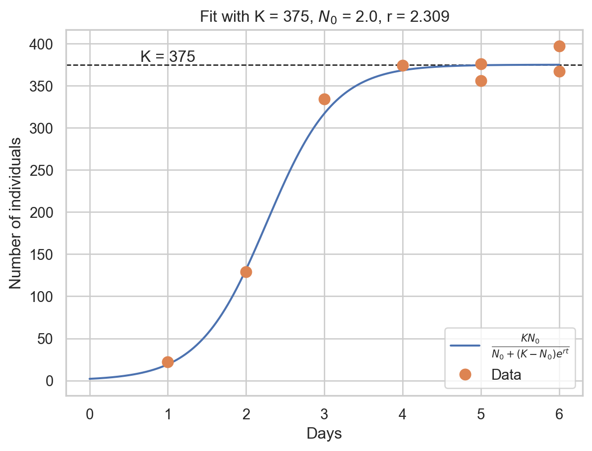
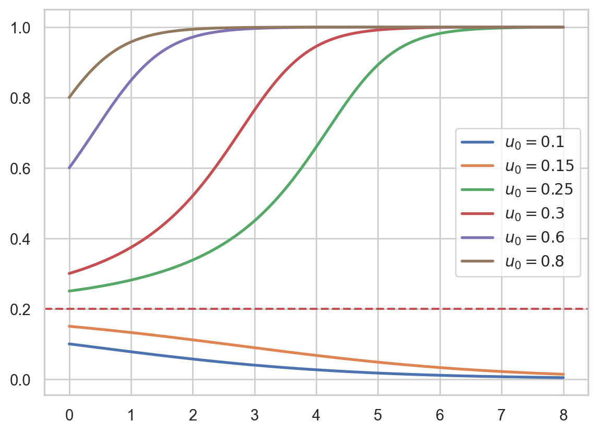

While populations can follow a phase of exponential growth for a limited amount of time, it seems impossible that this can go forever and that populations can grow to infinity. Indeed, we expect that there exists a negative effect of crowding, which can be stated in words as follows:
An increase of the population size produces a fertility decrease and a mortality increase; since resources are limited, if the population size exceeds some threshold level, the habitat cannot support the growth.
This simple statement tries to summarize the complex phenomenology of intraspecific competition due to many factors such as resource availability, habitat pollution and waste, predation increase, energy consumption for social organization.
The simplest way to include this effect into a model, is to suppose that fertility decreases and mortality increases linearly with the number of individuals; namely \[
\begin{aligned}
\beta(N) &= \beta_0 - \tilde{\beta}N, \\
\mu(N) &= \mu_0 + \tilde{\mu}N,
\end{aligned}
\]
where \(\beta_0\), \(\mu_0\), \(\tilde{\beta}\), and \(\tilde{\mu}\) are non-negative constants. Hence: \[
\begin{aligned}
B(N) &= \beta(N)N = \beta_0 N - \tilde{\beta}N^2, \\
D(N) &= \mu(N)N = \mu_0 N + \tilde{\mu}N^2.
\end{aligned}
\]
The resulting equation is generally written, after simple algebraic steps, as \[
\left\{\begin{aligned}
N' &= r \Bigl(1 - \frac{N}{K} \Bigr)N, \\
N(0) &= N_0,
\end{aligned}\right.
\]
where \(r=\beta_0 - \mu_0\) and \(K = r / (\tilde{\beta}+\tilde{\mu})\). These parameters are usually called intrinsic growth rate and carrying capacity.
A couple of comments are necessary: first of all, either \(\tilde{\beta}\) or \(\tilde{\mu}\) can be 0, but not both, otherwise there is no effect of crowding and \(K\) is not well-defined. Note also that, if \(\tilde{\beta}> 0\), the birth rate \(B(t)\) would become negative if \(N(t)\) is too large, which does not make sense biologically. However, this does not cause mathematical problems and the biological nonsense would occur only at population levels not normally reached, so we neglect this problem.
We will generally assume that \(r > 0\), so that also \(K > 0\). In that case, the behaviour of solutions to that equation displays a first phase of exponential growth, followed by convergence to the limiting value \(K\). The general solution is \[
N(t) = \frac{KN_0}{N_0 + (K-N_0)e^{-rt}}.
\]
When \(N_0 < K/2\), the resulting sigmoid curve have been called logistic curve, so that equation is also named logistic equation.
The logistic equation is extremely common in experimental biology. Below, data fitted to a logistic for micro-organisms.
Code
import matplotlib.pyplot as pltimport seaborn as snsimport numpy as npsns.set_theme("notebook", style="whitegrid")# from CRAN gauseR gause_1934_book_f04.rdat = [1.0,2.0,3.0,4.0,5.0,5.0,6.0,6.0]N = [ 22,129,334,374,376,356,397,367]K =375r =2.309N0 =2.0tt = np.linspace(0,6,1000)logistic = K*N0/(N0 + (K-N0)*(np.exp(-r*tt)))plt.axhline(y=K,color='k',linestyle='--',linewidth=1.0)plt.plot(tt, logistic,label='$\\frac{K N_0}{N_0+(K-N_0)e^{rt}}$')plt.plot(t,N,'.',markersize=16,label='Data')plt.xlabel('Days')plt.ylabel('Number of individuals')plt.title(f'Fit with K = {K}, $N_0$ = {N0}, r = {r}')plt.annotate(f'K = {K}',(1,K),ha='center',va='bottom')plt.legend()

Fitting of Paramecium caudatum data using the logistic model. Data from (Gause 1934, fig. 4).
As before, we can non-dimensionalize the equation. Now we select: \[
\tau = rt, \quad u = \frac{N}{K},
\]
so that \(u=1\) means that we are at carrying capacity. Substituting: \[
\dot{u} = u(1-u).
\]
The new equation has no parameters. Thus, the general solution of the logistic equation is just \[
N(t) = K u(r t).
\]
The absence of parameters in the non-dimensional equation means that its dynamic is always the same, up to a rescaling. We say that all parametric solutions (as we vary \(r\) and \(K\)) are topologically equivalent. Here, we cannot expect bifurcation, as we shall see.
3.2 Generalized logistic model
In general, we can take \(\beta\) and \(\mu\) as generic functions of \(N\), thus: \[
r(N) = \beta(N)-\mu(N)
\]
is also a generic function of \(N\). A generic growth model reads: \[
N' = r(N)N = f(N).
\]
We can implicitly solve this equation, in fact: \[
N(t) = N(0) e^{\int_{t_0}^t r(N(s)) \:\mathrm{d}s}.
\]
Thus, if \(N(0)>0\), then \(N(t)>0\) for all time. This is important to verify, since a population cannot be negative. Here, we need no further restriction on \(r(N)\) so to verify the condition.
How about equilibria? We have that \(E_0 = 0\) is always an equilibrium. (Thus, since orbits cannot cross it, they positive stay positive foreover. This is another possible proof.) It is called extinction equilibrium. Its stability follows from: \[
f'(N)|_{N=E_0} = r'(0)\cdot 0 + r(0) = r(0).
\]
The stability of \(E_0\) is given by \(r(0)\), which is called intrinsic growth rate. It is the growth rate we observe for very small population size. When \(r(0)>0\) the extinction equilibrium is unstable. Equivalently, it is unstable when \[
R_0 = \frac{\beta(0)}{\mu(0)} > 1.
\]
How to capture a general logistic effect? By general we mean what we quoted above: a population increase should correspond to a decrease of fertility and an increase of mortality. Thus: \[
r'(N) < 0, \quad\text{and}\quad \lim_{N\to\infty} r(N) < 0.
\]
The second hypothesis avoids the existence of positive horizontal asymptotes. Biologically, a sufficiently large population has always a negative growth rate.
We can now study more equilibria, those corresponding to \(r(N)=0\).
If \(r'(0)<0\), then by monotonicity we conclude that \(r(N)<0\) for all \(N\), so \(E_0=0\) is the only equilibrium and the population is doomed.
If \(r'(0)>0\), we have one additional (unique) equilibrium \(N^*\), that we denote by \(K\): that is, \(r(K)=0\). Since \[
f'(K) = r'(K)K + \underbrace{r(K)}_{=0} = r'(K)K < 0,
\]
this equilibrium is (globally) asymptotically stable. This equilibrium is also called carrying capacity.
The classic logistic equation has \(r(N) = r(1-N/K)\). The \(\theta\)-logistic model (or Bernoulli model) has \[
r(N) = r\bigl(1-(N/K)^\theta\bigr),
\]
for \(\theta>0\). There are a multitude of models for \(r(N)\), some we will explore in the assignments (see also figure below). Nonetheless, the above hypotheses always imply a sigmoid growth, when \(N(0)\in(0,K)\).
Different growth model giving a logistic effect. We set \(u=N/K\), where \(K\) is the carrying capacity.
Exercise
Verify that the above models are “logistic”, in the sense that they satisfy the hypotheses. Show that the Bernoulli model yields sigmoid solutions. (Hint: study \(N'\) and \(N''\).)
Exercise
Integrate the Gompertz model, \(\dot{u} = -u \log u\). This model is very common in the study of tumor cells proliferation. (Hint: set \(u(t) = e^{w(t)}\).)
3.3 Allee effect
(Story time) The great auk was a bird that became extinct by the end of the 19th century. They were found at the northern Atlantic (Canada, Scotland, Iceland), usually on rocky islands. The overall population was composed by millions of individuals, before sailors and hunters started killing them for their meat, feathers, and oily fat.
The Great Auk (from Wikipedia)
As it could be expected, the auk population drastically reduced and the bird disappeared from many islands very quickly. Governments became aware of the situation in the 18th century, and some laws forbidden the hunt of the great auk, although with limited success.
Some species like the great auk are not able to fully recover, even in the absence of predation (or with a small one). In order for a species to go to excintion with no predation, say for \[
N' = r(N)N,
\]
we would need \(r(0)<0\), otherwise the equilibrium \(N = 0\) is not stable. But this would lead to no further equilibria under the hypotheses of general logistic growth. Hence, we can further generalize the hypotheses as follows: the function \(r(N)\) is such that
there exists \(N_m > 0\) such that \(r'(N) > 0\) for \(N < N_m\) and \(r'(N)<0\) otherwise;
\(r(N_m) > 0\);
\(\lim_{N\to\infty} r(N) < 0\).
Therefore, we certainly have the equilibrium \(K > N_m\) (the carrying capacity). However, if \(r(0)<0\), we also have another equilibrium at \(T\in(0,N_m)\). In this case, we say that we have a strong Allee effect. On the other hand, for \(r(0)>0\) there are no further equilibria, thus we have a weak Allee effect.
Let us study the stability for \(r(0)<0\). Remember that \[
f'(N) = r'(N)N + r(N).
\]
We have 3 equilibria:
\(N=E_0 = 0\), which is asymptotically stable, since \(f'(0) = r(0)<0\).
\(N=T\in(0,N_m)\), which is unstable, since \(f'(T) = r'(T)T > 0\).
\(N=K > N_m\), which is asymptotically stable, since \(f'(K) = r(K)K<0\).
Hence, we have the following result: if \(N(0) < T\), then \(N(t)\to 0\) (extinction), otherwise if \(N(0)>T\), then \(N(t)\to K\) (survival). We call \(T\) the threshold population for survival.
Code
import matplotlib.pyplot as pltimport seaborn as snsimport numpy as npfrom scipy.integrate import solve_ivpsns.set_theme("notebook", style="whitegrid")r =0.5T,K =0.2,1.0f =lambda t,N: r*(N/T-1)*(1-N/K)*Nfig,ax = plt.subplots()u0 = [0.1,0.15,0.25,0.3,0.6,0.8]sol = solve_ivp(f,[0,8],u0,max_step=0.05)ax.plot(sol.t,sol.y.T,lw=2.0)ax.axhline(y=T,color='r',linestyle='--')ax.grid(True)ax.legend([f'$u_0 = {u}$'for u in u0])plt.show()

Solutions of the equation \(N'=r N(N/T-1)(1-N/K)\). Note the threshold value for \(N = T\).
The Allee effect may be found in other situations, for instance when the predation rate is a non-linear function of \(N\).
Gause, G. F. 1934. The Struggle for Existence. William & Wilkins Company.